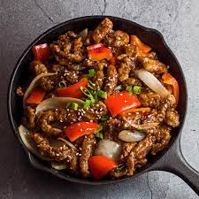

Beijing Beef Recipe

A rendition of Panda Express famous Beijing Beef
Ingredients
Beijing Beef
- 1.5 poundsflank steak, cut into 1/2 inch strips
- 1/2 teaspoon white pepper
- 1inch knob ginger (grated)
- 1/2 cup of cornstarch
- 3/4 cup of flour
- 1 quart of vegetable oil
- 3 cloves of garlic
- 1 egg
- Salt + Pepper
Sauce and Assembly
- 1 tablespoon dark soy
- 1 tablespoon light soy
- 1/3 cup of hoisin sauce
- 2 tablespoons of ketchup
- 2 tablespoons of sriracha
- 1 tablespoons of chinese black vinegar
- 2 tablespoons of white vinegar
- 1.4 cup of sugar
- 3 cloves of garlic, finely chopped
- 3 tablespoon of vegetable oil
- 1 yellow onion cut into 1 inch pieces
- 1 red bell pepper cut into 1 inch pieces
- 1.2 teaspoon of sichuan peppercorn, grounded
- 2 teaspoons of corn starch
- 1/2 cup water, plus 2 teaspoons for cornstarch slurry
Instructions
- Season beef to tast with salt, white pepper and ginger, toss to combine
- Combine cornstarch, fliur and pinch of salt, add marinate beef to eggwash, then flour mix, shake off th excess and place in baking sheet
- For slurry, combine corn starch with 2 tsp of water and mix to combine
- Add oil in wok, add oil and preheat to 350F. Ad 3 pieces of beef away from you
- Fry about 5 minutes until crispy and remove with sprainer, repeat for rest of beef
- Mix 1/2 cup of water, sugar, light and dark soym, white vinegar, ketchup, sriracha, hoisin, sichuan pepper, and chinese vinegar
- For slurry, combine corn starch with 2 tsp of water and mix to combine
- In wok,add enough oil to coat the bottom, add your onion and red bell pepper, season them with salt, stir fry for about 4 minutes; then add the sauce and reduce for two minutes
- Add slurry incrementally till it gets a thicker consistency, then add fried beef and stir fry for one minute until everything gets coated with the sauce. Cut the heat, add garlic